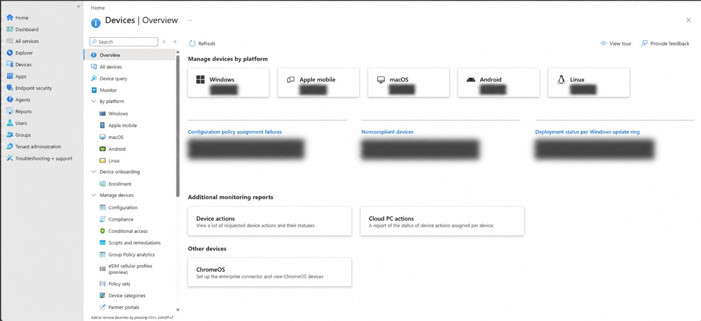
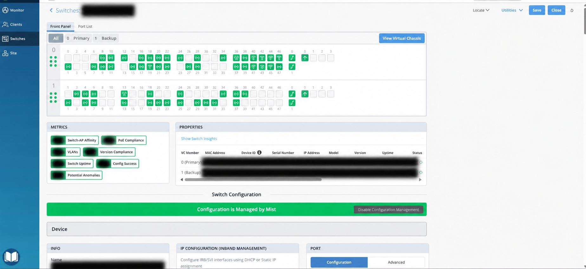
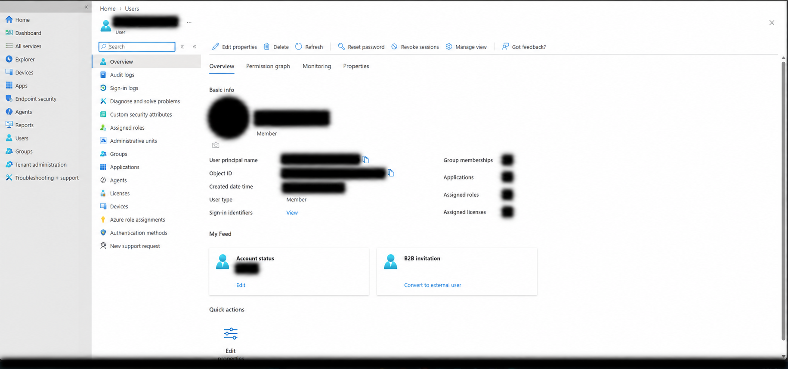
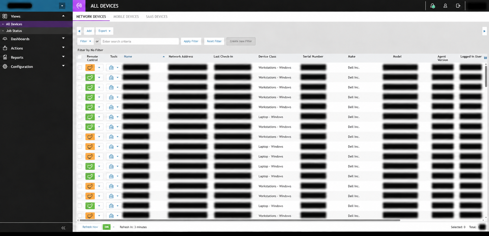

Work examples / Professional work & labs
From endpoints to infrastructure.
A closer look at my professional IT tools, followed by lab exercises and a support simulation. Each example connects a technical view to the work it supports.
01 / Professional experience
Systems & network operations
The administrative views behind daily IT support: managed endpoints, user access, switch connectivity, and remote device visibility.
- Tools
- Microsoft Intune · Microsoft Entra ID · Juniper Mist · Remote monitoring & management
- Focus
- Endpoint visibility, identity administration, connectivity, and support triage
Redacted for privacy: personal identifiers, device identifiers, and environment-specific values are obscured. Images use AI-assisted privacy redaction; fine interface details may differ from the originals.

A central view of managed devices
Device inventory by platform, configuration reporting, and compliance monitoring in Microsoft Intune.
Endpoint visibility
Reviewing device inventory and compliance reports helps identify where configuration or device follow-up is needed.

Switch ports & network visibility
A virtual chassis and switch-port view, with monitoring metrics and centrally managed configuration.
Network troubleshooting
Port status, switch health, and configuration visibility support the connectivity troubleshooting I perform for campus workstations and wireless infrastructure.

Account context in one place
A user overview with account controls and views into group memberships, applications, roles, and licenses.
Identity administration
The user overview brings together the account and access context used to investigate sign-in and access requests.

Visibility across supported endpoints
An endpoint inventory with device classes, remote-control tools, and check-in reporting.
Support triage
A centralized inventory helps locate the right endpoint and assess its reporting status before beginning a remote support session.
Connecting systems to user support
These examples connect the account, endpoint, and network layers involved in everyday IT troubleshooting.
How this connects to my role
My campus responsibilities include account administration, device support, Juniper Mist switching and wireless troubleshooting, and coordinating issues through resolution.
See my current responsibilities02 / Windows lab
Identity & access administration
A provisioning exercise covering account creation, security group membership, and directory review.
- Environment
- Windows · Active Directory Users and Computers
- Focus
- User accounts, security groups, and directory structure

Create the account
Created a user in Active Directory Users and Computers and configured password options as part of an account provisioning exercise.
Open full-size screenshot
Assign a security group
Used the Select Groups dialog to assign a user to a security group and practice group-based access administration.
Open full-size screenshot
Review the directory
Reviewed domain groups and related objects to confirm the available groups and directory structure.
Open full-size screenshotWhat this demonstrates
Familiarity with the directory tools and account workflows used in IT support and systems administration.
How it connects to my work
I also administer Active Directory user accounts in my current campus IT role at Mather Splendido.
03 / Support simulation
An access request, through resolution.
A new department head needs access associated with their role. The scenario follows the ticket from queue review to a documented access change.
- Environment
- ServiceDesk Simulator · Simulated user directory
- Workflow
- Review request → Check user → Update group → Document

Review the request
Selected a high-priority incident in which a new department head needed access associated with the previous manager.
Open full-size screenshot
Check the user and access
Reviewed the employee profile, department, and current access alongside the request before making a change.
Open full-size screenshot
Update group membership
Added the management group in the simulated directory to address the department head’s access request.
Open full-size screenshot
Document and close
Recorded the access change and its reason in the resolution notes, then closed the simulated ticket.
Open full-size screenshotWhat this demonstrates
Structured ticket handling, user and access review, and resolution notes that explain the change.
Working through the whole request
The screenshots follow one scenario across four stages, including the final ticket documentation.
Continue the conversation
Let’s talk systems & networks.
Explore my current role or get in touch about an opportunity.